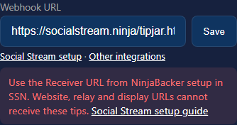

1. Hesabınızı bağlayın
SSN masaüstü uygulaması veya Chrome uzantısıyla başlayın. Yayın sırasında SSN'yi açık tutun.
- NinjaBacker'ı aç. Hesabınızı oluşturun ve ödeme almak için Stripe kurulumunu tamamlayın.
- NinjaBacker panelinde Social Stream Ninja bölümünü açıp Private Tip ID'nizi kopyalayın.
- SSN'de Para > Mağazalar ve destek > Bağlı platformlar > NinjaBacker bağışları > Kurulum bölümünü açın. Kullanıcı adınızı ve özel Tip ID'nizi girin.
- Teslimat seçeneğini Canlı akış (basit) olarak bırakın, NinjaBacker bağışlarını açıp Kurulumu kaydet düğmesine tıklayın.
Bağlı platformlar gizliyse SSN içinde tam moda geçin.
Canlı akış webhook gerektirmez. Bağlıyken yeni bahşişleri gösterir; SSN kapalıyken gelenleri yeniden oynatmaz.

2. İsteğe bağlı: webhook kullanın
SSN kapalıyken bahşişleri yedi güne kadar sırada tutmak için Güvenilir webhook seçin.
- NinjaBacker'da Webhook bölümünü açın. Webhook Signature Secret altında Generate düğmesine tıklayıp gizli anahtarı kopyalayın. Zaten bir anahtar kullanıyorsanız onu kopyalayın.
- SSN'nin NinjaBacker kurulumunda Güvenilir webhook seçin, imza anahtarını yapıştırın ve Kurulumu kaydet düğmesine tıklayın.
- SSN'de Alıcı URL'sini kopyala düğmesine tıklayın. NinjaBacker'ın Webhook URL alanına yapıştırıp Save düğmesine tıklayın.

Alıcı URL'si şöyle başlar:
https://api.socialstream.ninja/v1/ninjabacker/webhook/...Tip Jar, sohbet paneli ve diğer görünüm URL'leri OBS içindir. Webhook isteklerini alamazlar.
Canlı akışa geri dön
Geçiş, SSN alıcısındaki sıraya alınmış bahşişleri siler. NinjaBacker'daki eski Webhook URL alanını da temizleyip kaydedin.
3. Görünümü OBS'ye ekleyin
- Uyarılar için Mağazalar ve destek bölümündeki OBS katmanı seçicisinden NinjaBacker bağışlarını seçin. Katman bağlantısını kopyalayın.
- Birikimli hedef için Para > Tip Jar ve Hedef Göstergesi bölümünü açın. Stilinizi ve hedefinizi seçip bağlantıyı kopyalayın.
- OBS'de Tarayıcı kaynağı ekleyip görünüm bağlantısını yapıştırın. SSN ve görünüm aynı oturumu kullanmalıdır.
Tip Jar stilleri ve hedef ayarları
Herkese açık NinjaBacker bahşiş sayfanızı izleyicilerle paylaşın. Katman bağlantılarını OBS'de, alıcı URL'lerini webhook alanında kullanın.
4. Kurulumu kontrol edin
SSN NinjaBacker uyarı katmanını açın. NinjaBacker'da Testing bölümünü açıp Send Test Tip düğmesine tıklayın. Bu katmanda bir test uyarısı görünmelidir.
Send Test Tip altındaki sonucu okuyun. Webhook accepted, isteğin alındığını doğrular; OBS'de uyarı gösterildiğini doğrulamaz. Hata durumunda URL'yi veya imzalama sırrını düzeltip yeni bir test gönderin. Pano testleri beş dakika boyunca yeniden denenir.
Test bahşişleri Tip Jar'a para eklemez, sohbette ücretli bağış olarak görünmez ve ücretli ödülleri tetiklemez.
Test uyarısı yok mu?
SSN'yi açık, NinjaBacker bağışlarını etkin tutun. Kullanıcı adı ve Tip ID'nin aynı hesaba ait olduğunu kontrol edin. Webhook için NinjaBacker'da Delivery History bölümünü yenileyin, alıcı URL'sini ve imza anahtarını kontrol edin.
HTTP 405 veya görünüm URL'si hatası mı?
SSN'nin Güvenilir webhook kurulumundan Alıcı URL'sini kopyalayın, NinjaBacker'da kaydedin ve yeni bir test bahşişi gönderin. Yeni URL kaydedildiğinde eski adrese yeniden gönderme denemeleri durur.


Bahşişler sohbette görünüyor ama hedefte görünmüyor mu?
Tip Jar oturumunu ve kaynak, bağış türü, ücretli etkinlik filtrelerini kontrol edin. Bahşiş tutarları için parasal hedef kullanın. İadeler SSN uyarılarından veya hedeflerinden düşülmez.